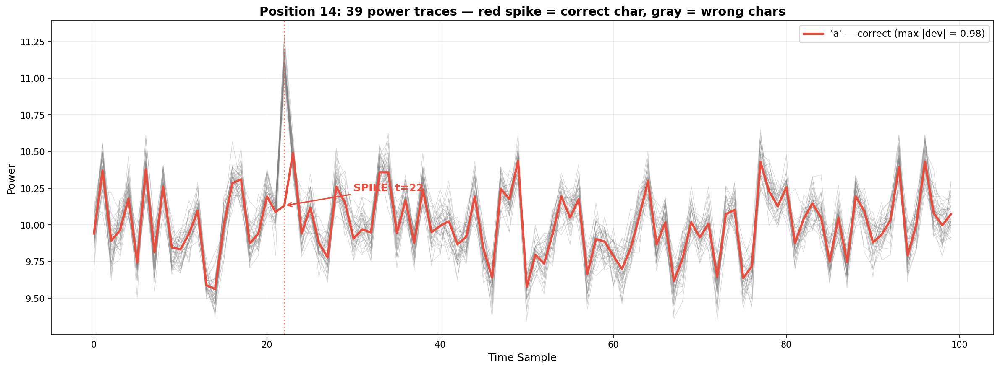

Misc Lab 3¶
Task 1：songmingti¶
背景知识¶
JPEG 文件结构¶
JPEG 文件以 SOI (Start of Image) 标记 FF D8 开头，以 EOI (End of Image) 标记 FF D9 结尾。绝大多数图片查看器和解析库只读取 SOI → EOI 之间的数据，EOI 之后的内容会被直接忽略。因此只要我们在结束标记之后再加入一些内容，就可以实现隐写
解题步骤¶
1. 初步分析¶
用 file 命令查看文件基本信息：
file "songmingti.jpg"
# 输出: JPEG image data, JFIF standard 1.01, 450x300第一张图片直接打开即可看到 前半段 flag。
2. 发现隐藏数据¶
其实直接丢进stegsolve这样的图片分析工具也可以，在这里记录一下python代码写法
用 Python 检查 JPEG 文件结构，寻找文件尾标记（EOF marker FF D9）之后是否还有额外数据：
with open("songmingti (1).jpg", "rb") as f:
data = f.read()
eof = b"\xff\xd9"
pos = data.find(eof)
after = data[pos + 2:]
print(f"Data after JPEG EOF: {len(after)} bytes")
# 输出: Data after JPEG EOF: 39003 bytes发现在 FF D9 之后还有约 39KB 的额外数据，且开头为 FF D8（JPEG 文件头 SOI marker），说明这是一个完整隐藏的 JPEG 图片。
3. 提取隐藏图片¶
with open("songmingti (1).jpg", "rb") as f:
data = f.read()
eof = b"\xff\xd9"
pos = data.find(eof)
second_jpg = data[pos + 2:]
with open("hidden.jpg", "wb") as f:
f.write(second_jpg)打开提取出的 hidden.jpg，即可看到 后半段 flag。
4. 拼接获得完整 Flag¶
将两张图片中的 flag 拼接：AAA{the_true_fans_fans_nmb_-1s!}，这样我们就得到了最终的flag
Task 2：Find the Spot¶
最简单的一集 感动 TwT
解题步骤¶
-
识图：将照片放进百度识图，可以发现这是临沂服务区
-
寻找不同角度的图片（我是在高德地图和小红书的打卡图片里找到的）
flag：flag{520精品集合店_儿童游玩需有家长陪同}
Task 3：EZStego¶
代码部分有 AI 的帮助
前置知识¶
参考了 wiki 上的介绍
PLTE Chunk 格式¶
PNG 文件由多个 chunk 组成，其中 PLTE (Palette) chunk 用于索引色图像（颜色类型 3）。格式如下：
| 字段 | 长度 | 说明 |
|---|---|---|
| Length | 4 bytes | 数据长度 = 颜色数 × 3 |
| Chunk Type | 4 bytes | "PLTE" |
| Palette Data | N bytes | 每 3 字节一组 RGB (R,G,B)，共 N/3 种颜色 |
| CRC | 4 bytes | 校验和 |
调色板最多包含 256 种颜色（768 字节），每种颜色 24 bit（RGB 各 8 bit）。
EZStego 隐写原理¶
EZStego 由 Romana Machado 设计，是最早的 PNG 调色板隐写算法之一。核心思路如下：
- 排序调色板：将 PLTE 中的所有颜色按亮度 (Luminance) 排序，亮度公式 \(L = 0.299R + 0.587G + 0.114B\)。排序后相邻的颜色对人眼几乎无法区分
- 嵌入秘密数据（编码过程）：遍历每个像素，获取其调色板索引，在亮度排序序列中找到该颜色的位置 \(pos\)，检查 \(pos\) 的 LSB 是否匹配要嵌入的秘密比特。如果不匹配，将像素索引改为 \(pos \oplus 1\)（与相邻颜色交换）。因为相邻颜色几乎相同，视觉上无差异
- 提取秘密数据（解码过程）：按亮度排序调色板，对每个像素找到其颜色在排序序列中的位置，该位置的 LSB 即是隐藏的 1 bit，按光栅顺序收集所有比特并转换为字节
解题步骤¶
1. 分析图像¶
from PIL import Image
img = Image.open("palette.png")
print(img.mode) # 'P' — 调色板模式
print(img.size) # (800, 369)- 图像为 P 模式（索引色），800 × 369 像素
- 包含 256 色调色板
- 所有像素数据都是调色板索引（0–255）
2. 按亮度排序调色板¶
palette = img.getpalette()
colors = []
for i in range(256):
r, g, b = palette[i*3], palette[i*3+1], palette[i*3+2]
luminance = 0.299 * r + 0.587 * g + 0.114 * b
colors.append((i, luminance))
sorted_by_lum = sorted(colors, key=lambda x: x[1])
# 映射: 原始索引 → 亮度排序位置
index_to_pos = {orig_idx: pos for pos, (orig_idx, _) in enumerate(sorted_by_lum)}3. 提取 LSB 比特¶
import numpy as np
pixels = np.array(img)
bits = []
for row in range(pixels.shape[0]):
for col in range(pixels.shape[1]):
pixel_idx = pixels[row, col]
sorted_pos = index_to_pos[pixel_idx]
bits.append(sorted_pos & 1) # 取 LSB800 × 369 = 295,200 个像素 → 295,200 bit → 最终一共得到 36,900 字节的隐藏数据。
4. 转换为字节并提取 Flag¶
data = bytearray()
for i in range(0, len(bits) - 7, 8):
byte = 0
for j in range(8):
byte = (byte << 1) | bits[i + j]
data.append(byte)
# 搜索 flag 模式
import re
text = ''.join(chr(b) if 32 <= b < 127 else '.' for b in data)
for match in re.finditer(r'[A-Z]{3,}\{[^}]+\}', text):
print(f"Flag: {match.group()}")完整解题代码¶
from PIL import Image
import numpy as np
import re
# 读取图像
img = Image.open('palette.png')
palette = img.getpalette()
# 按亮度排序调色板
colors = []
for i in range(256):
r, g, b = palette[i*3], palette[i*3+1], palette[i*3+2]
lum = 0.299 * r + 0.587 * g + 0.114 * b
colors.append((i, lum))
sorted_by_lum = sorted(colors, key=lambda x: x[1])
index_to_pos = {orig: pos for pos, (orig, _) in enumerate(sorted_by_lum)}
# 提取所有像素的 LSB
pixels = np.array(img)
bits = []
for row in range(pixels.shape[0]):
for col in range(pixels.shape[1]):
bits.append(index_to_pos[pixels[row, col]] & 1)
# 比特转字节
data = bytearray()
for i in range(0, len(bits) - 7, 8):
byte = sum(bits[i + j] << (7 - j) for j in range(8))
data.append(byte)
# 搜索 flag
text = ''.join(chr(b) if 32 <= b < 127 else '.' for b in data)
for match in re.finditer(r'[A-Z]{3,}\{[^}]+\}', text):
print(f"Flag: {match.group()}")Task 4：Time & Power — 侧信道功率分析¶
Flag :
0ops{power_1s_a11_y0u_n55d}
前置知识¶
侧信道攻击简介¶
侧信道攻击 是一种通过分析系统的物理实现（而非算法本身的数学弱点）来获取秘密信息的攻击方法。常见侧信道包括：
| 类型 | 泄漏源 | 分析对象 |
|---|---|---|
| 功耗分析（Power Analysis） | CMOS 电路开关功耗 | 电流/功率轨迹 |
| 时序分析（Timing Analysis） | 操作执行时间差异 | 响应延迟 |
| 电磁分析（EM Analysis） | 电磁辐射 | 电磁波形 |
| 缓存攻击（Cache Attack） | CPU 缓存命中/未命中 | 访问时间 |
简单功耗分析（SPA）¶
简单功耗分析（Simple Power Analysis, SPA） 是指攻击者直接观察设备在执行加密操作时的功耗轨迹，从中提取秘密信息。
原理
- 在密码逐位比对过程中，设备会逐个字符进行比较
- 若字符正确：设备继续比较下一位 → 产生额外计算 → 功率轨迹出现异常尖峰
- 若字符错误：设备停止比较 → 功率轨迹保持正常
因此，正确字符的功率轨迹会在某个特定时间点出现明显偏离（尖峰/谷值），而在其他时间点与错误字符的轨迹相似。基于这一原理，我们可以通过找出每个位置上单点偏离最大的轨迹来识别正确字符。
解题步骤¶
1. 理解数据结构¶
首先加载 .npz 文件查看数据结构：
import numpy as np
data = np.load('data.npz')
print(data.keys()) # ['input', 'input_id', 'power']数据包含三个数组：
| 数组 | 维度 | 说明 |
|---|---|---|
input |
(1053,) | 1053 个单字符（a-z, 0-9, _, {, }），每个字符被尝试了 27 次 |
input_id |
(1053,) | 整数 0-26，标识当前测试的是 flag 的第几个位置 |
power |
(1053, 100) | 功率轨迹矩阵，每条轨迹 100 个采样点 |
数据组织方式：
- 共 27 个 flag 位置（
input_id0-26） - 每个位置尝试了 39 个候选字符（a-z, 0-9,
_,{,}） - 39 × 27 = 1053 条功率轨迹，每条轨迹 100 个采样点
2. 攻击方法：单点最大偏离¶
参考了题目简介里提到的那道题的writeup
正确字符的功耗特征是在单个采样点出现极端尖峰，而错误字符的轨迹在各采样点都围绕中位数波动。因此，对每个 flag 位置：
- 计算该位置所有 39 条轨迹在每个采样点的中位数，作为"正常"基准
- 对每条轨迹，计算其与中位数之差的最大绝对值（即最极端偏离的那个采样点）
- 最大绝对值最大的那条轨迹对应的字符，就是正确字符
median = np.median(pos_power, axis=0) # 每个采样点的中位数
diffs = pos_power - median # 每条轨迹与中位数的差
max_abs_diff = np.max(np.abs(diffs), axis=1) # 每条轨迹的单点最大偏离
best_idx = np.argmax(max_abs_diff) # 偏离最大的轨迹 = 正确字符3. 功率轨迹可视化¶
对每个 flag 位置的 39 条功率轨迹进行可视化，可以直观地观察正确字符（红色）在某采样点处的异常尖峰：

完整解题代码¶
import numpy as np
data = np.load('data.npz')
inputs = data['input']
power = data['power']
n_positions = 27 # flag 长度
chars_per_pos = 39 # 每个位置尝试的字符数
flag = ''
for pos in range(n_positions):
start = pos * chars_per_pos
end = start + chars_per_pos
pos_power = power[start:end]
pos_chars = inputs[start:end]
# 单点最大偏离法：正确字符在某个采样点有极端尖峰
median = np.median(pos_power, axis=0)
diffs = pos_power - median
max_abs_diff = np.max(np.abs(diffs), axis=1)
best_idx = np.argmax(max_abs_diff)
flag += pos_chars[best_idx]
print(f'Flag: {flag}')
# 输出: 0ops{power_1s_a11_y0u_n55d}Bonus Feedback¶
假期比较空闲，所以每个专题的课基本都去听了。Misc 的两次专题课听起来很好理解，我也很感兴趣，能一直听下去！作业也比较友好，两个 Bonus 题目借助了一点 AI，但我基本能完全理解 AI 在做什么以及它对知识点的解释，不像某些专题那样让人两眼一抹黑（ 建议的话……其实没什么建议！现在课的形式已经很完美了 qwq。如果非要说的话，作业或许可以在临近 DDL 的时候放出一些 hint～
附录：用到的一些工具 or 命令¶
| 工具/命令 | 用途 |
|---|---|
file <filename> |
查看文件类型 |
xxd <filename> \| tail -20 |
查看文件末尾的十六进制 |
strings <filename> |
提取可打印字符串 |
binwalk <filename> |
检测文件中的嵌套文件 |
binwalk -e <filename> |
自动提取嵌套文件 |
exiftool <filename> |
查看图片/文件的元数据 |
zsteg <filename> |
检测 PNG/BMP 的 LSB 隐写 |
steghide info <filename> |
查看 steghide 隐藏信息 |
stegsolve |
图像隐写综合分析（GUI 工具） |